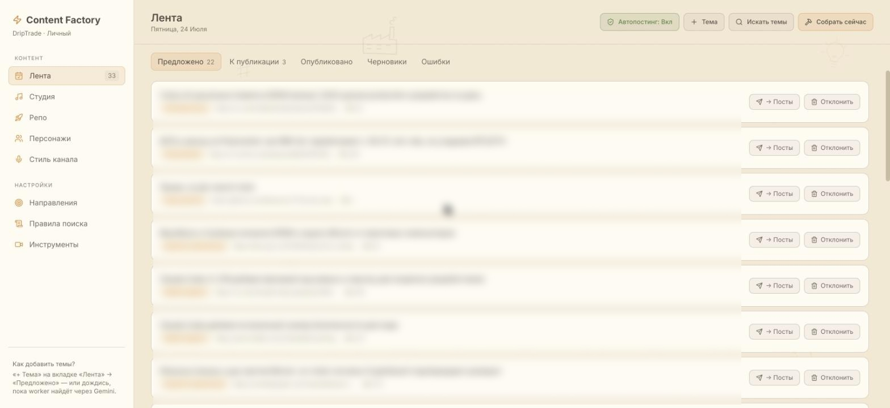
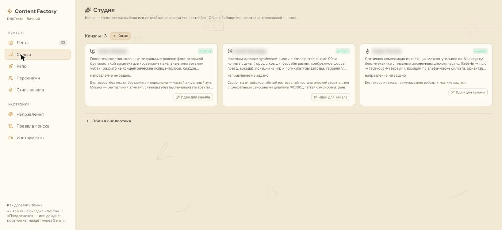
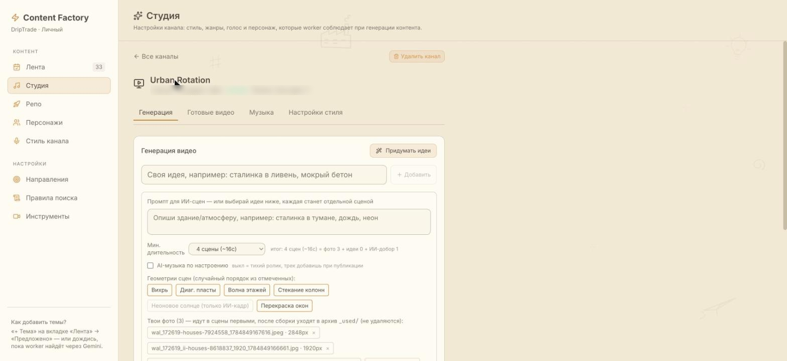
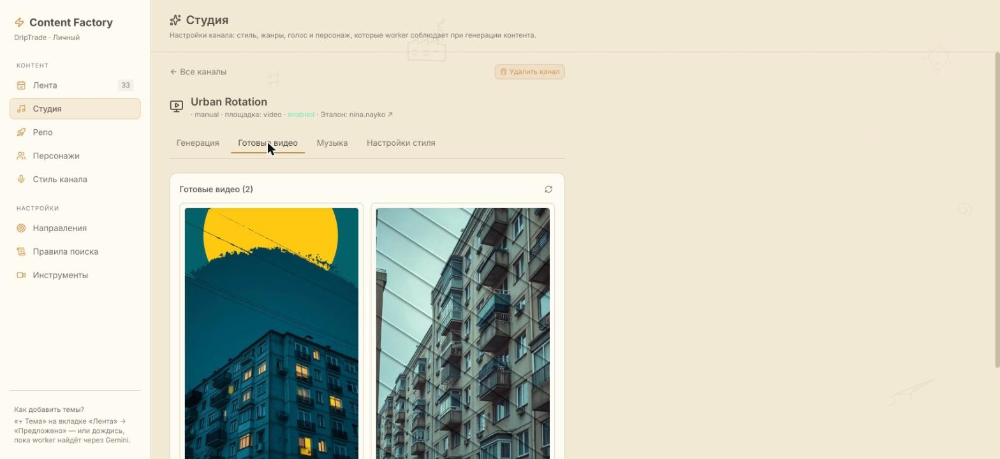
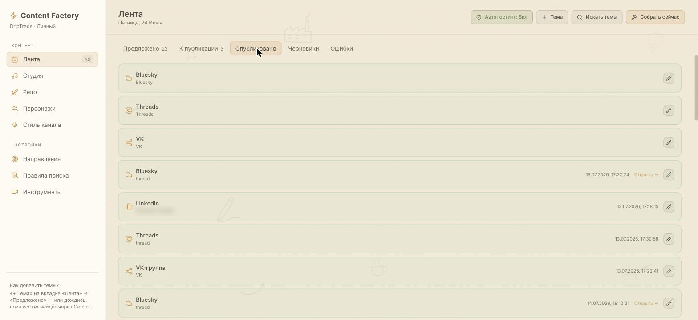

Content goes out,
while you sleep
This is my own content factory. Every morning it finds a topic on its own, writes posts in the author's voice, draws cover images, runs the text through an audit and schedules each post for the best time on every platform. Over a hundred posts have gone out on autopilot so far. I set up the same factory for you, turnkey: on your accounts, in your voice, for your goals.
One input. Five outputs.
One topic in the morning turns into different posts for different platforms: a long-form post for X, a business-toned one for LinkedIn, threads for Threads and Bluesky, a Russian-language post for VK. Not the same text copied everywhere, but a version adapted to the format and language of each platform.
- Discoverythe factory pulls fresh topics from your niches on its own: RSS feeds, social media, AI ranking signals
- Generationcopy in the author's voice, each platform gets its own format and language
- Audita built-in critic rejects weak drafts before publishing, not after
- Cover imagesan image is generated for each post and fitted to the platform's requirements
- Schedulingevery post lands at the best time for its audience, in their own time zone
- Publishingautoposting with no human step; any post can be pulled before it goes out
Not just news: a funnel
A feed made only of news doesn't sell anything. Inside the factory, a content strategist rotates the role of each post the way a real social media manager would:
The ratio is adjustable. The point is that the offer shows up in the feed on a regular, predictable schedule, not whenever someone remembers to post it.
What it looks like
Screenshots from my live factory. Topic names and channel handles are blurred: part of the content is built on private data.





A 40-second promo
The limits, honestly
- Platforms
- Live right now: X, LinkedIn, Threads, Bluesky, VK. We agree on the starting set together; adding a platform after launch is a separate task
- Your part
- A week to set up the voice and topics together with me, then 10 minutes a day reviewing the feed, or full autopilot
- API costs
- Text generation costs cents a day. Video and images cost more, you choose the volume. You can also run it on your own API keys
- What the factory doesn't do
- It doesn't invent expertise for you: the factory needs your topics and source material, otherwise the feed ends up generic
- Code and data
- The factory deploys on your own server; access and content stay with you
Pricing
- deployment on your server
- author voice and topic direction
- up to 5 platforms connected
- content strategy: value / warm-up / offer
- a week of calibration together
- monitoring and fixing failures
- my API keys, limits set by the plan
- adjustments to voice and topics
- cheaper on your own keys, billed by actual use
Let's discuss your factory
Tell me what you want to publish and where. I'll show a live demo of my own factory and quote an exact price in writing before we start.
Message on TelegramOr by email: sanexxx777@gmail.com. I reply within a day.